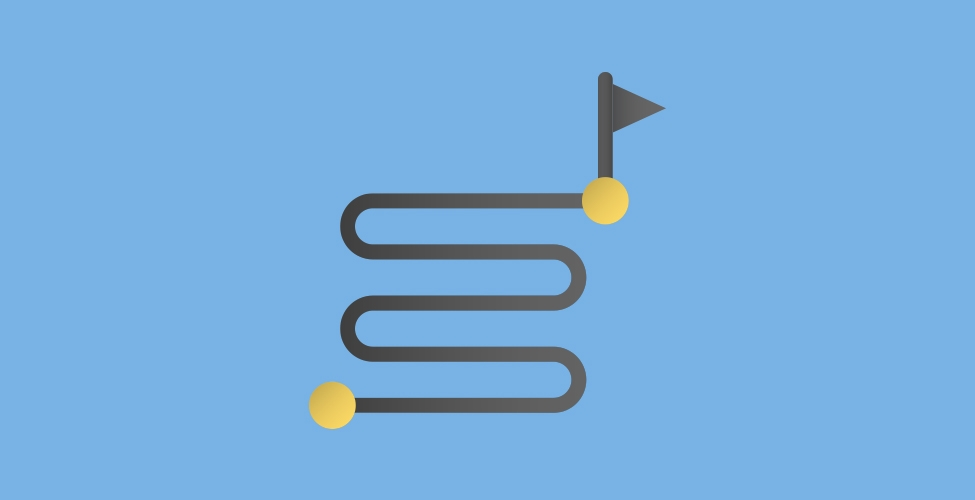
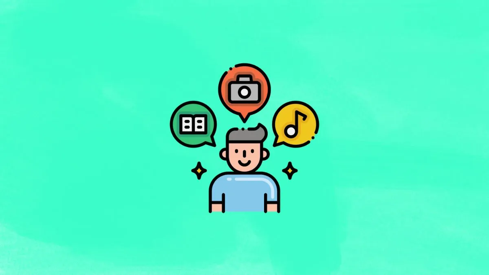

Je suis donc actuellement en première année de BUT Informatique à Grenoble à l'IUT2
J'ai obtenu un BAC général en 2022 au lycée Gay-Lussac à Limoges avec les spécialité Maths, NSI et l'option Maths Expertes

Centre d'interêt
J'adore le sport, je pratique du badminton en club depuis maintenant 3 ans, je fais également du volleyball en loisir. Je joue également à des jeux vidéos qui nécessite communication et réflex pendant mon temps libre.
Je suis une personne organisé, je range et ordonne mes affaires pour mieux travailler. Je suis engagé car je finis ce que j'ai entrepris. Je suis serviable et à l'écoute, j'aime aider les personnes autour de moi. Je suis également relativement calme, je garde mon sang-froid si une situation semble tendue. Je suis curieux, j'aime apprendre de nouvelle choses qui me sont inconnues. je suis patient, si il y a necessité d'attendre pour pouvoir mieux repartir, cela ne me dérange pas.